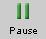
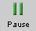

|
|
|
|
Click on a number to view the explanation of the corresponding item.
There are four basic control buttons. They are, from left to right:
 Rewind. Resets the simulation to the
starting point with the previously chosen system
parameters. After clicking Rewind, click Play to
restart the motion.
Rewind. Resets the simulation to the
starting point with the previously chosen system
parameters. After clicking Rewind, click Play to
restart the motion.
 / Play/Pause. Clicking starts
the motion.
/ Play/Pause. Clicking starts
the motion.
After Play has been clicked, the button will change into the Pause button .
Click it if you want to take a 'snapshot' of the motion at a given instant. To resume the motion, click Play once more.
 Step. Lets you step through the motion in equal
time steps.
Step. Lets you step through the motion in equal
time steps.
 Reset. Resets the applet to its default setting.
Reset. Resets the applet to its default setting.
Adjustments in the system parameters can only be made after first clicking REWIND or RESET.


This toggle button displays or hides the path taken by the planet.


This toggle button displays/hides sectors of equal area shaded dark or light in the planet's orbit as shown in the image below.


The Vectors toggle button displays/hides the panel shown below on which you can select the vectors you want to have displayed.

The following vectors can be displayed:
 of planet relative to
stars - Velocity of the planet relative to the
inertial frame of the fixed stars background. The Lab
frame is represented with a fixed stars background at
rest. The arrow representing the velocity is in magenta.
' of planet relative to sun - Velocity
of the planet relative to the inertial frame in which the
sun is at rest. It is represented by a blue arrow.
of planet relative to
stars - Velocity of the planet relative to the
inertial frame of the fixed stars background. The Lab
frame is represented with a fixed stars background at
rest. The arrow representing the velocity is in magenta.
' of planet relative to sun - Velocity
of the planet relative to the inertial frame in which the
sun is at rest. It is represented by a blue arrow.
 of sun relative to stars - Velocity of
the sun relative to the inertial frame of the fixed stars
background. It is represented by a yellow arrow.
of sun relative to stars - Velocity of
the sun relative to the inertial frame of the fixed stars
background. It is represented by a yellow arrow.
When the motion is paused, you can click on the yellow sun-velocity vector and drag it. By positioning it properly, as in the image below,

you can verify that the three velocity vectors
, ', and satisfy the Galilean
velocity addition theorem: = ' + .
 of planet relative to stars and sun -
The planet's acceleration relative to the sun is also the
planet's acceleration relative to the fixed stars because
the sun is moving with constant velocity relative to the
fixed stars. This acceleration vector is represented by
an orange arrow.
of planet relative to stars and sun -
The planet's acceleration relative to the sun is also the
planet's acceleration relative to the fixed stars because
the sun is moving with constant velocity relative to the
fixed stars. This acceleration vector is represented by
an orange arrow.

The applet allows you to display three different velocity vectors and one acceleration vector. The symbols for these vectors can be either displayed or hidden by means of the Labels toggle button.

The Data toggle button displays/hides the data shown in the following image.

All quantities in this list are expressed in units in which the length unit is the astronomical unit (AU), which is the average radius of the earth's orbit, and in which the time unit is the year (Year), which is the time required for the earth to go once around the sun.

The Graph toggle button displays/hides a graph of the planet's angular speed relative to the sun.
By clicking anywhere in the area of the graph, the graph can be dragged to any convenient location on the screen. When holding down the Control key while dragging in the area of the graph (horizontally or vertically), different parts of the graph can be brought into view while the graph stays in the same area of the screen.

There are three sliders in all. They are described below, in the order from left to right.
You can adjust a slider setting either by dragging the slider tab or by entering an exact value in the slider input dialog.
To enter an exact value, click on the Input Dialog button
 of the slider to open the dialog. The
dialog for the Sun Velocity slider is illustrated below. The
range in which values can be entered, from -10 AU/Year to 10
AU/Year in this case, is indicated above the data entry
field.
of the slider to open the dialog. The
dialog for the Sun Velocity slider is illustrated below. The
range in which values can be entered, from -10 AU/Year to 10
AU/Year in this case, is indicated above the data entry
field.

Clicking on a slider to the left or right of the slider tab allows fine adjustment of the slider setting.
' relative to the sun are unaffected by
different settings for the sun's velocity. However, the
velocity of the planet relative to the fixed stars
is affected. (See Point 4, 'Vectors'.)

The sun is represented by a yellow disk and the planet by a green dot. By clicking in the area of the planet-sun system and dragging, you can move the system to any convenient location. This can be done at any time, even while the motion is in progress.